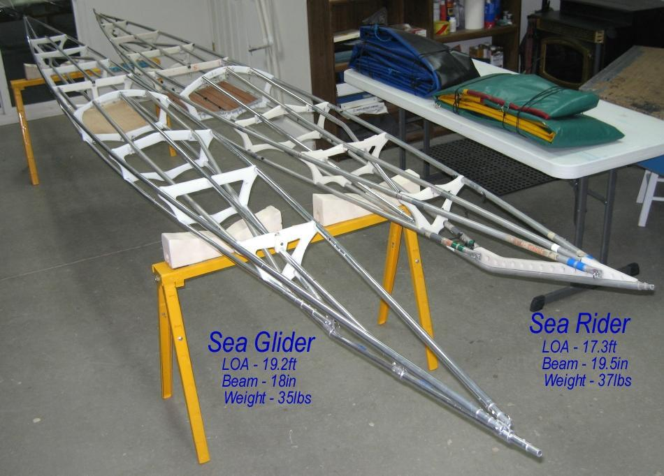

| Sea Glider / Sea Rider Frames | Menu Last Page Next Page |
|

The new Sea Glider and the updated Sea Rider folding kayaks both now use a two tube internal bracing system that attaches at the keel near sections 1 and sections 8 and replaces the inwales used previously. The deck mounted internal bracing is as effective as inwales in countering hull flex ( in static testing), and are easier to assemble and break down as well as easier overall to construct.
Inwales are positioned on the inside of the cross sections, and are subject to popping out of their "snaps" unless otherwise taped to the gunwales or attached with connectors, as seen in the manual. Though these frames requires no internal bracing or inwales to retain their shape (rocker) in the water, the internal bracing is useful in extreme conditions on the shallow Greenland boats. They are not required on the taller touring kayaks in the manual, though they are certainly an option. It is too cold (-15F last night) for on water testing at this time. In addition, both boats have a new rounded Masik ( Section 4). All of the frame changes to the older Sea Rider have been adapted to the new Sea Glider. The Sea Glider has additional features such as "snap-buttons" between stringer sections and a lower attachment of the center deckridge. The next several pages detail these modifications, and they can be adapted to any of the boats in the manual. All of the "New Pages" will be added to their respective sections in the builders manual at a later date. |
|